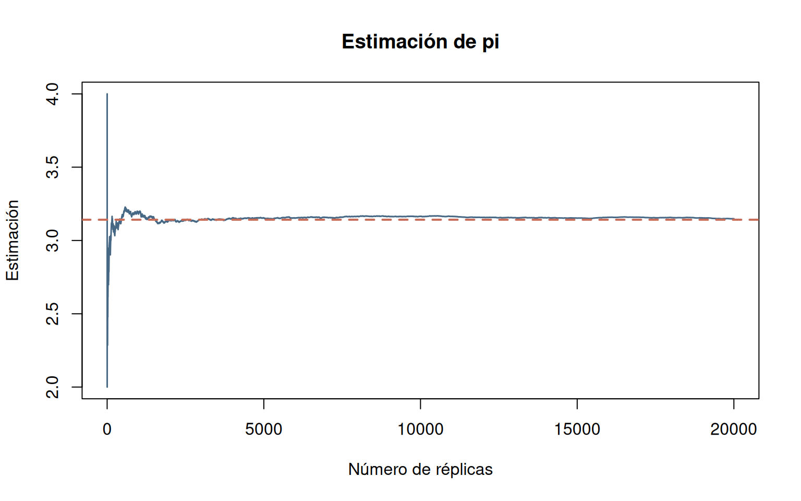
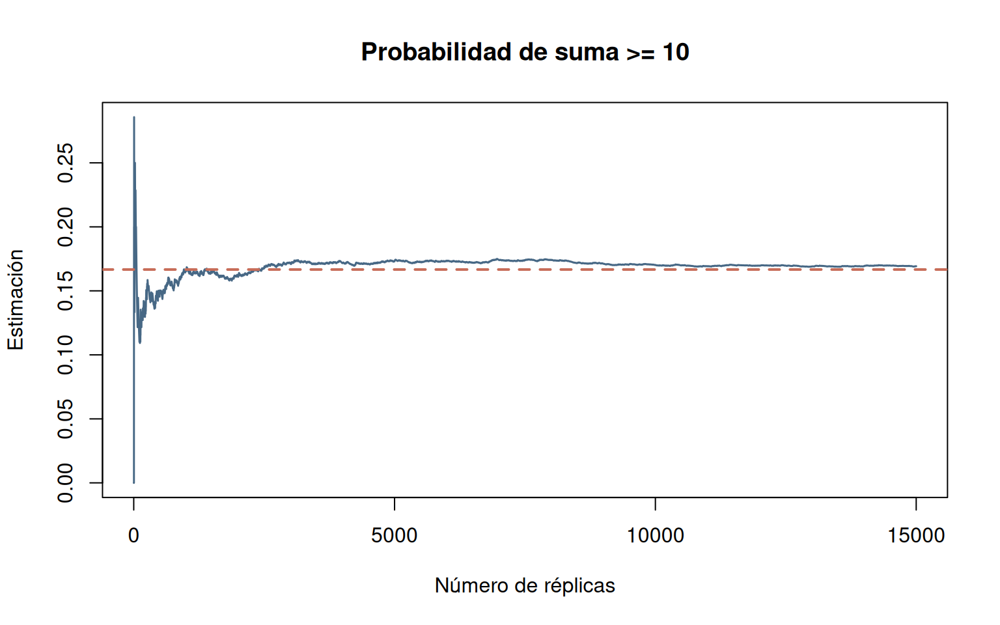
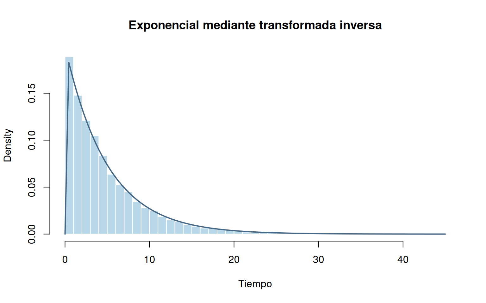
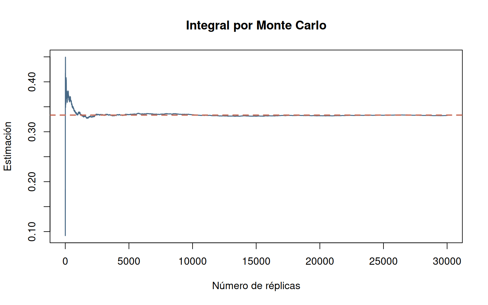
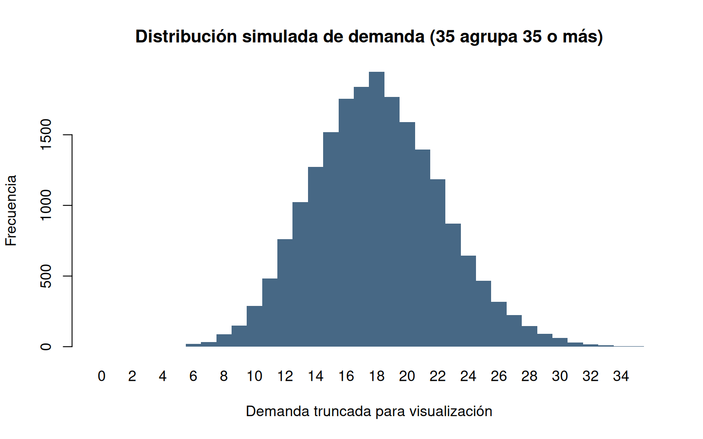
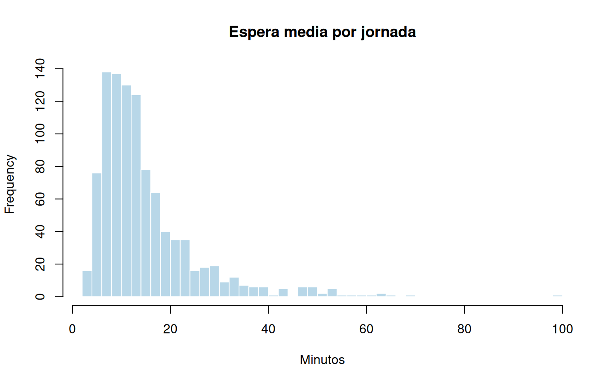
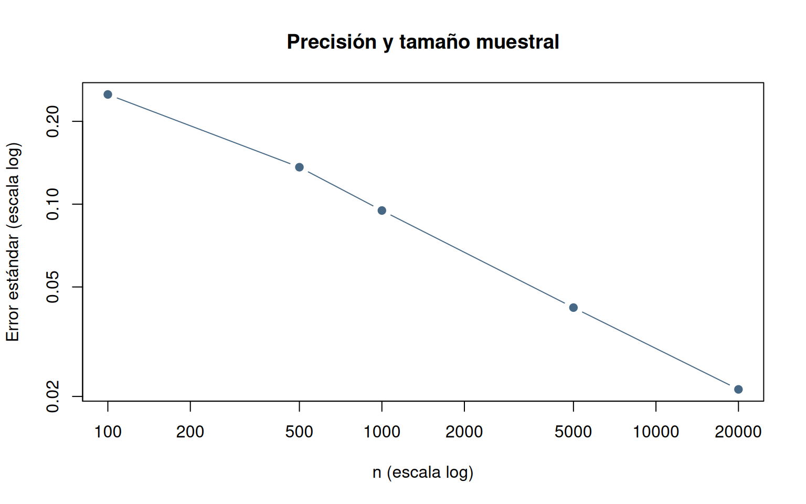

Un equipo de analistas desea aproximar el valor de \(\pi\) mediante un experimento computacional, sin utilizar directamente su fórmula geométrica. Para ello genera puntos uniformemente distribuidos en un cuadrado de lado uno y registra cuáles quedan dentro de un cuarto de círculo de radio uno. La proporción de puntos interiores permite estimar \(\pi\) y estudiar cómo evoluciona la estimación a medida que aumenta el número de simulaciones.
Solución explicada, paso a paso.
# Fijar la semilla para reproducir el experimento
set.seed(4201)
# Definir el número de réplicas independientes
n <- 20000
# Generar coordenadas X uniformes
x <- runif(n); y <- runif(n)
# Registrar con 1 los puntos dentro del cuarto de círculo
indicador <- as.numeric(x^2 + y^2 <= 1)
# Obtener el resumen y transformar la estimación a la escala de π
resultado_pi <- resumen_mc(indicador)
resultado_pi[c("estimacion", "error_estandar", "LI", "LS")] <- 4 * resultado_pi[c("estimacion", "error_estandar", "LI", "LS")]
# Mostrar los resultados calculados
print(resultado_pi)## n estimacion error_estandar LI LS
## 2.000000e+04 3.148400e+00 1.157867e-02 3.125706e+00 3.171094e+00# Presentar el valor de referencia o la medida solicitada
cat("Valor de referencia:", pi, "\n")## Valor de referencia: 3.141593# Visualizar la evolución del promedio acumulado
convergencia_mc(4*indicador, referencia = pi, titulo = "Estimación de pi")
En una actividad de capacitación sobre riesgo y probabilidad, se lanzan simultáneamente dos dados equilibrados. Se considera un resultado favorable cuando la suma de las caras es al menos 10. Se desea estimar la probabilidad de este evento mediante lanzamientos simulados, compararla con el valor teórico y observar la convergencia de la frecuencia relativa.
Solución explicada, paso a paso.
# Fijar la semilla para reproducir el experimento
set.seed(4202)
# Definir el número de réplicas independientes
n <- 15000
# Simular las caras del primer dado
d1 <- sample(1:6, n, replace = TRUE)
# Simular las caras del segundo dado
d2 <- sample(1:6, n, replace = TRUE)
# Construir la variable de interés para la estimación
y <- as.numeric(d1 + d2 >= 10)
# Mostrar los resultados calculados
print(resumen_mc(y))## n estimacion error_estandar LI LS
## 1.500000e+04 1.692667e-01 3.061860e-03 1.632655e-01 1.752678e-01# Presentar el valor de referencia o la medida solicitada
cat("Probabilidad teórica:", 1/6, "\n")## Probabilidad teórica: 0.1666667# Visualizar la evolución del promedio acumulado
convergencia_mc(y, 1/6, "Probabilidad de suma >= 10")
Un centro de atención estudia el tiempo que transcurre entre eventos sucesivos, suponiendo que puede representarse mediante una distribución exponencial con tasa \(\lambda=0.2\) por unidad de tiempo. El equipo necesita generar observaciones a partir de números uniformes mediante el método de la transformada inversa y comprobar si el promedio y la forma de la distribución simulada concuerdan con el modelo propuesto.
Solución explicada, paso a paso.
# Fijar la semilla para reproducir el experimento
set.seed(4203)
# Definir el número de réplicas independientes
n <- 12000
# Definir la tasa del modelo exponencial
lambda <- 0.2
# Generar números uniformes de partida
u <- runif(n)
# Aplicar la transformación inversa exponencial
x <- -log1p(-u)/lambda
# Mostrar los resultados calculados
print(resumen_mc(x))## n estimacion error_estandar LI LS
## 1.200000e+04 4.891034e+00 4.499630e-02 4.802843e+00 4.979225e+00# Dibujar el histograma de los resultados
hist(x, breaks = 45, probability = TRUE, col = "#B8D7E8", border = "white",
main = "Exponencial mediante transformada inversa", xlab = "Tiempo")
# Superponer la densidad teórica
curve(dexp(x, rate = lambda), add = TRUE, col = "#476885", lwd = 2)
# Presentar el valor de referencia o la medida solicitada
cat("Media teórica:", 1/lambda, "\n")## Media teórica: 5Un grupo de estudiantes necesita aproximar numéricamente el área bajo la curva \(f(x)=x^2\) entre 0 y 1. En lugar de aplicar directamente una regla de integración, genera valores uniformes en ese intervalo y calcula el promedio de sus cuadrados. El objetivo es obtener una estimación Monte Carlo de la integral y examinar su convergencia hacia el valor exacto.
Solución explicada, paso a paso.
# Fijar la semilla para reproducir el experimento
set.seed(4204)
# Generar números uniformes de partida
u <- runif(30000)
# Construir la variable de interés para la estimación
y <- u^2
# Mostrar los resultados calculados
print(resumen_mc(y))## n estimacion error_estandar LI LS
## 3.000000e+04 3.325218e-01 1.713326e-03 3.291638e-01 3.358799e-01# Visualizar la evolución del promedio acumulado
convergencia_mc(y, 1/3, "Integral por Monte Carlo")
Una planta industrial fabrica lotes de 50 unidades y estima que cada unidad tiene una probabilidad de defecto de 0.04, de manera independiente. Para planear las inspecciones, la gerencia desea conocer la probabilidad de encontrar cuatro o más unidades defectuosas en un lote. Se simulan numerosos lotes bajo un modelo binomial y se compara la frecuencia del evento con la probabilidad calculada analíticamente.
Solución explicada, paso a paso.
# Fijar la semilla para reproducir el experimento
set.seed(4205)
# Definir el número de réplicas independientes
n <- 20000
# Simular el número de defectos por lote
defectos <- rbinom(n, size = 50, prob = 0.04)
# Construir la variable de interés para la estimación
y <- as.numeric(defectos >= 4)
# Mostrar los resultados calculados
print(resumen_mc(y))## n estimacion error_estandar LI LS
## 2.000000e+04 1.412000e-01 2.462404e-03 1.363738e-01 1.460262e-01# Presentar el valor de referencia o la medida solicitada
cat("Probabilidad teórica:", pbinom(3, 50, 0.04, lower.tail = FALSE), "\n")## Probabilidad teórica: 0.1391308Una empresa comercial mantiene un inventario disponible de 22 unidades para atender la demanda de un periodo. Según sus registros, la demanda puede modelarse con una distribución de Poisson de media 18 unidades por periodo. La administración quiere estimar la probabilidad de quedarse sin existencias suficientes, la cantidad promedio de unidades faltantes y el volumen promedio efectivamente atendido. Se simulan periodos independientes para evaluar estos indicadores.
Solución explicada, paso a paso.
# Fijar la semilla para reproducir el experimento
set.seed(4206)
# Definir el número de réplicas independientes
n <- 20000
# Definir las unidades disponibles
stock <- 22
# Simular la demanda de cada periodo
demanda <- rpois(n, lambda = 18)
# Calcular el déficit no negativo por periodo
faltante <- pmax(demanda-stock, 0)
# Mostrar los resultados calculados
print(resumen_mc(as.numeric(faltante > 0)))## n estimacion error_estandar LI LS
## 2.000000e+04 1.445500e-01 2.486579e-03 1.396764e-01 1.494236e-01# Mostrar los resultados calculados
print(resumen_mc(faltante))## n estimacion error_estandar LI LS
## 2.000000e+04 4.314000e-01 9.357835e-03 4.130590e-01 4.497410e-01# Mostrar los resultados calculados
print(resumen_mc(pmin(demanda, stock)))## n estimacion error_estandar LI LS
## 2.000000e+04 1.761060e+01 2.495775e-02 1.756168e+01 1.765952e+01# Graficar las frecuencias de demanda
barplot(table(factor(pmin(demanda, 35), levels = 0:35)),
col = "#476885", border = NA, space = 0,
main = "Distribución simulada de demanda (35 agrupa 35 o más)",
xlab = "Demanda truncada para visualización", ylab = "Frecuencia")
El departamento de mantenimiento de una empresa analiza la vida útil de un componente cuya duración se modela mediante una distribución Weibull con parámetro de forma 2 y escala 1500 horas. Se desea estimar la probabilidad de que el componente siga funcionando después de 1200 horas. Para ello se simulan vidas útiles independientes y se contrasta la proporción de supervivencia con la probabilidad teórica.
Solución explicada, paso a paso.
# Fijar la semilla para reproducir el experimento
set.seed(4207)
# Definir el número de réplicas independientes
n <- 20000
# Simular las vidas útiles de los componentes
vida <- rweibull(n, shape = 2, scale = 1500)
# Construir la variable de interés para la estimación
y <- as.numeric(vida > 1200)
# Mostrar los resultados calculados
print(resumen_mc(y))## n estimacion error_estandar LI LS
## 2.000000e+04 5.263500e-01 3.530709e-03 5.194299e-01 5.332701e-01# Presentar el valor de referencia o la medida solicitada
cat("Supervivencia teórica:", pweibull(1200, 2, 1500, lower.tail = FALSE), "\n")## Supervivencia teórica: 0.5272924Una oficina de atención al cliente opera con un único servidor y atiende 100 clientes por jornada simulada. Se supone que los tiempos entre llegadas son exponenciales con media de 8 minutos y los tiempos de servicio son exponenciales con media de 6 minutos. La dirección quiere estimar el tiempo medio de espera por jornada y conocer su variabilidad entre jornadas independientes. Para ello se reproducen 1000 jornadas completas, respetando el orden de llegada y la disponibilidad del servidor.
Solución explicada, paso a paso.
# Crear la función que simula una jornada
simular_jornada <- function(n_clientes = 100, media_interllegada = 8,
media_servicio = 6) {
stopifnot(n_clientes >= 1, media_interllegada > 0, media_servicio > 0)
a <- cumsum(rexp(n_clientes, rate = 1/media_interllegada))
s <- rexp(n_clientes, rate = 1/media_servicio)
b <- c_out <- w <- numeric(n_clientes)
# Recorrer los clientes en orden de llegada
for (i in seq_len(n_clientes)) {
# Consultar el instante en que quedó libre el servidor
fin_anterior <- if (i == 1) 0 else c_out[i-1]
# Iniciar el servicio cuando cliente y servidor estén disponibles
b[i] <- max(a[i], fin_anterior)
# Calcular el instante de salida del cliente
c_out[i] <- b[i] + s[i]
# Calcular el tiempo de espera del cliente
w[i] <- b[i] - a[i]
}
data.frame(cliente = seq_len(n_clientes), llegada = a,
servicio = s, inicio = b, salida = c_out, espera = w)
# Cerrar el bloque de instrucciones anterior
}
# Fijar la semilla para reproducir el experimento
set.seed(4208)
# Definir cuántas jornadas se simulan
replicas <- 1000
# Repetir jornadas y calcular su espera media
espera_media_jornada <- replicate(replicas, {
# Simular una jornada completa
jornada <- simular_jornada()
# Obtener la espera media de esta jornada
mean(jornada$espera)
# Cerrar el bloque de instrucciones anterior
})
# Mostrar los resultados calculados
print(resumen_mc(espera_media_jornada))## n estimacion error_estandar LI LS
## 1000.0000000 14.8161393 0.3234935 14.1821038 15.4501748# Dibujar el histograma de los resultados
hist(espera_media_jornada, breaks = 35, col = "#B8D7E8", border = "white",
main = "Espera media por jornada", xlab = "Minutos")
Un analista utiliza una distribución normal con media 10 y desviación estándar 3 para estudiar la precisión de un estimador obtenido por simulación. Repite el cálculo del promedio con distintos tamaños de muestra y registra el error estándar y el error absoluto respecto de la media conocida. El propósito es examinar cómo cambia la precisión al aumentar el número de observaciones simuladas.
Solución explicada, paso a paso.
# Fijar la semilla para reproducir el experimento
set.seed(4209)
# Definir los tamaños muestrales que se comparan
tamanos <- c(100, 500, 1000, 5000, 20000)
# Repetir el análisis para cada tamaño de muestra
comparacion <- do.call(rbind, lapply(tamanos, function(n) {
# Construir la variable de interés para la estimación
y <- rnorm(n, mean = 10, sd = 3)
data.frame(n = n, estimacion = mean(y), error_estandar = sd(y)/sqrt(n),
error_absoluto = abs(mean(y)-10))
# Continuar la operación definida en el paso actual
}))
# Mostrar los resultados calculados
print(comparacion)## n estimacion error_estandar error_absoluto
## 1 100 10.131473 0.25047447 0.131472807
## 2 500 9.975967 0.13624056 0.024033292
## 3 1000 9.994644 0.09481060 0.005355827
## 4 5000 9.951121 0.04206834 0.048878588
## 5 20000 10.007426 0.02121661 0.007426031# Representar gráficamente los resultados
plot(comparacion$n, comparacion$error_estandar, log = "xy", type = "b",
col = "#476885", pch = 19, xlab = "n (escala log)",
ylab = "Error estándar (escala log)", main = "Precisión y tamaño muestral")
En una sesión de laboratorio se propone construir una interfaz que permita experimentar con la estimación de \(\pi\) mediante puntos aleatorios. El estudiante podrá elegir el número de puntos, ejecutar una nueva simulación y observar tanto la estimación como su error absoluto y la ubicación de los puntos dentro y fuera del cuarto de círculo. Este programa es opcional y se ejecuta por separado mediante Shiny.
Este bloque no se ejecuta al tejer el Rmd. Copiarlo en un archivo
app.R y ejecutarlo con shiny::runApp() una vez
instalado el paquete shiny.
Solución explicada, paso a paso.
# Cargar el paquete necesario para la aplicación
library(shiny)
# Definir la interfaz de usuario
ui <- fluidPage(
titlePanel("Monte Carlo: aproximación de pi"),
sidebarLayout(
sidebarPanel(sliderInput("n", "Número de puntos", min = 100,
max = 20000, value = 1000, step = 100),
actionButton("nuevo", "Simular")),
mainPanel(verbatimTextOutput("resultado"), plotOutput("grafico"))
)
# Cerrar el bloque de instrucciones anterior
)
# Definir la lógica del servidor
server <- function(input, output, session) {
datos <- eventReactive(list(input$n, input$nuevo), {
x <- runif(input$n); y <- runif(input$n)
data.frame(x = x, y = y, dentro = x*x + y*y <= 1)
}, ignoreInit = FALSE)
output$resultado <- renderPrint({
# Consultar los datos simulados
d <- datos()
# Presentar el valor de referencia o la medida solicitada
cat("Estimación de pi:", 4*mean(d$dentro), "\n")
# Presentar el valor de referencia o la medida solicitada
cat("Error absoluto:", abs(4*mean(d$dentro)-pi), "\n")
})
output$grafico <- renderPlot({
# Consultar los datos simulados
d <- datos()
# Representar gráficamente los resultados
plot(d$x, d$y, pch = 16, cex = 0.4,
col = ifelse(d$dentro, "#476885", "#C76D59"),
asp = 1, xlab = "X", ylab = "Y")
# Crear los ángulos para dibujar el arco
t <- seq(0, pi/2, length.out = 200)
# Dibujar el arco del cuarto de círculo
lines(cos(t), sin(t), lwd = 2)
})
# Cerrar el bloque de instrucciones anterior
}
# Iniciar la aplicación interactiva
shinyApp(ui, server)